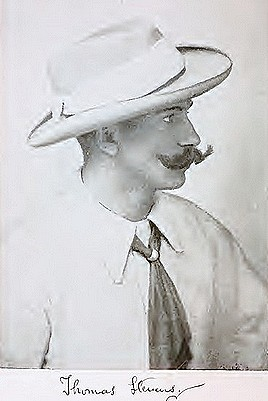
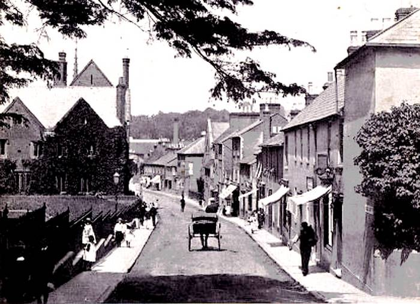
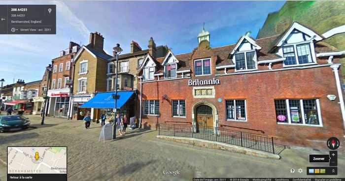
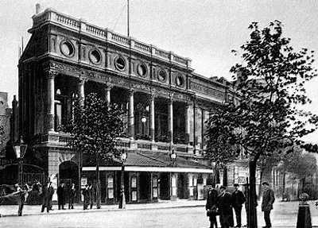
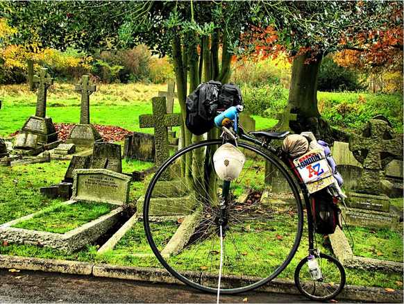
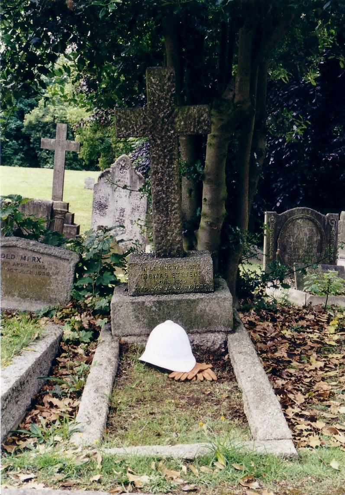

"Son cerveau était formaté avec un sens du but à atteindre et une détermination qui frôlaient le surhumain. Une fois qu'il s'était fixé un objectif, il le poursuivait sans relache jusqu'à son accomplissement."
The Fearless Traveller, around the world with Thomas Stevens par Geof Koss
"Notre héros mesure 1m67, Il est construit comme un géant trapu, porte l'empreinte du courage et de l'enthousiasme chevaleresque sur ses beaux traits et que vous le désigniez Britannique ou Yankee, l'honneur rejaillit sur l'anglo-saxon, dont il est un type magnifique . Vive Tom Stevens! "
Outing (magazine de sport américain des années 1882 à 1923)

Thomas Stevens est né en Angleterre; le 24 décembre 1854 à Berkhamsted, rue Castle Street.
Berkhamsted, Castle Street, en 1903

Source : http://www.hertfordshire-genealogy.co.uk - Information et chronique sur l'histoire locale et familiale du comté de Hertfordshire de 1600 jusqu'à la fin de la première guerre mondiale , un formidable travail fait par un passionné.
Berkhamsted est une petite ville du comté de Hertfordshire, à environ 41 kilomètres au nord de Londres. Peut-être la devise de ce comté se pencha-t-elle sur le berceau de Thomas et l'inspira pour sa vie future, qui dit « Trust and fear not » (« Ayez confiance et n'ayez crainte »). L'écrivain Graham Greene, le poète William Cowper sont nés eux aussi à Berkhamsted, et le général de Gaulle dans son exil en Angleterre a vécu près de là de 1941 à 1942.
Son père William est ouvrier ( ou épicier selon certains sites et magazines ; mais dans un article du 31 janvier 2007 consacré à Thomas Stevens paru sur le site anglais hemeltoday.co.uk qui traite des informations à et dans les environs de l'agglomération de Hemel Hempstead, située dans le Herdfordshire comme Berkhamsted, il est indiqué que son père était ouvrier. Nous pencherions donc plutôt vers ce fait, le site ayant recueilli ses informations auprès de la Société d'Histoire Locale et du Musée de Berkhamsted ). Thomas a une soeur aînée et s'ajouteront ultérieurement deux autre soeurs et deux frères.
Thomas Stevens reçoit une solide éducation de base à Berkhamsted à l'école Bourne School, une institution charitable qui ouvrit ses portes en 1737 suite à un don testamentaire fait dans ce but. L'école ferma ses portes en 1875, et le bâtiment actuel qui date de 1853 (qu'a donc fréquenté Thomas Stevens) est maintenant occupé par l'établissement financier Britannia.

Il fréquente cette école jusqu'à l'âge de 14 ans, excellait en sport et montrait de l'intérêt pour l'histoire et la littérature de voyage.
Cette année 1868 William, son père, décide d'émigrer seul aux États-Unis avec pour objectif que sa famille le rejoigne plus tard, une fois leur arrivée préparée. Émigrer aux États-Unis à cette époque était certainement une opportunité. La guerre civile s'était terminée en 1865 et le pays était en pleine reconstruction sur tous les plans. L'industrie et le chemin de fer se développaient considérablement, les villes s'étendaient, les terres avaient besoin d'exploitants pour être mise en culture. Le besoin de main d'oeuvre était très important.
C'est donc Thomas qui à 14 ans quitte l'école, assure la charge de chef de famille et subvient aux besoins de celle-ci en travaillant comme commis d'épicerie. Mais William, père de Thomas, doit finalement rentrer 2 ans après son départ, sa femme Ann qui était restée en Angleterre étant tombée malade.
En 1871, à 17 ans, Thomas propose alors de partir aux États-Unis puis de faire venir sa famille. Ce qui est dit est fait, et une fois sa famille établie, il décide de suivre son propre chemin.
Pendant les années qui suivent il parcourt les États-Unis, exerçant divers métiers, auxiliaire juridique, fermier, employé de ranch, puis travaillant notamment dans les laminoirs de la compagnie de chemin de fer Union Pacific, à Laramie dans le Wyoming où, contribuant à l'occasion avec le journal local, il devient un habitué du Laramie Bicycle Club, ensuite employé dans une mine du Colorado. Il quitte Denver (Colorado) pour rejoindre San Francisco (Californie), après avoir décidé de traverser d'abord les États-Unis, puis le monde à bicycle.
Voici ce que rapporte Karl Kron, dans son livre Ten Thousand Miles On A Bicycle, qui s'est entretenu avec Stevens à l'arrivée de celui-ci au terme de sa traversée des États-Unis :
Natif de Berkhamsted, Hertfordshire, Angleterre, il émigra en Amérique à l'âge de 18 ans, et alla aussitôt rejoindre un frère qui s'était installé à l'ouest du Mississipi. À partir de cette époque (1871) il ne retraversa jamais la rivière jusqu'à ce que le bicycle l'y ramène, 13 ans plus tard. Il passa une grande partie de cette période dans l'agriculture et l'élevage du bétail, dans le Missouri et Wyoming (ses parents exploitent toujours une ferme près de Kansas City) ; pendant deux ans il fut employé dans les laminoirs de la compagnie de chemin de fer Union Pacific, à Laramie, travailla dans la construction du chemin de fer, tint un petit magasin pendant un moment et mis la main à diverses activités qui offrent un moyen de subsistance à un entreprenant émigrant dans un nouveau pays. Désireux de changer cette façon de vivre pour « voir plus du monde, » l'idée lui vint que la selle d'un bicycle pourrait offrir le point-de-vue ad hoc. D'où sa décision de tenter de rouler d'océan à océan, avec la conviction que les évènements d'un voyage si nouveau pourraient être relatés dans un livre attrayant, dont l'éditeur pourrait financer la poursuite du parcours à travers l'Europe jusqu'à Constantinople, et peut-être finalement à travers l'Asie aussi.
A San Francisco il achète un grand-bi - le deux roues en vogue ; le vélocipède est dépassé et la bicyclette en est à ses balbutiements - de marque Columbia (coutant, selon le modèle, l'équivalent d'environ 2500 à 3000 dollars de l'année 2014), la plus grande marque de cycles des USA à cette époque, s'entraîne quelques semaines, parfois avec le San Francisco Bicycle club et...
Le 22 avril 1884 il prend la route sur son grand-bi depuis San Francisco pour son tour du monde, avec pour seuls bagages les vêtements qu'il portait sur lui, une chemise de rechange, une paire de sous-vêtements de rechange et un revolver de poche de type "Bulldog" (petit revolver de poche, trapu, de gros calibre, à double action, produit et copié par de nombreux fabricants ; arme populaire à l'époque, tant en Europe qu'aux États-Unis), un peu d'outillage pour cycle, quelques accessoires d'écriture pour tenir son journal..,
Le 17 décembre 1886, après deux ans et huit mois de voyage et environ 28000 kilomètres s'achevait ce premier (le premier de tous) tour du monde à bicycle.
Par la même occasion, il est également le premier à avoir traversé les États-Unis à bicycle.
Thomas Stevens publiait le récit de ce formidable voyage en 1887, dans un long livre de 1200 pages, en deux tomes, bien écrit.
En 1888 il partit pour l'Afrique, contraté par le journal New York World à la recherche de l'explorateur Stanley (celui qui avait retrouvé Livingstone), et le retrouva, puis voyagea en Russie, en Europe, en Inde... écrivant plusieurs livres relatant ses aventures, et faisant des lectures de ses ouvrages à travers les États-Unis.
En 1895, âgé de 40 ans, Thomas Stevens regagna définitivement son Angleterre natale où il épousa Frances Barnes. Il travailla plusieurs années comme manager du Garrick Theater, un fameux théâtre de Londres
Garrick Theater, début des années 1900

Puis il écrivit un livre pour enfant, des articles sur ses voyages, puis peu à peu tomba dans l'oubli.
Thomas Stevens est décédé le 24 janvier 1935 d'un cancer de la vessie, à l'âge de 80 ans. Il est enterré au cimetière St Marylebone à Londres.
Épilogue
Joff Summerfield, constructeur anglais de grand-bi, prenait la route à Londres (GB) le 1 mai 2006 sur un grand-bi de sa fabrication et le 9 novembre 2008, ayant effectué le tour du monde (35000 kilomètres sur sa machine) il rentrait en Angleterre.
Avant son départ il se rendit en forme d'hommage sur la tombe de Thomas Stevens et fit de même à son retour où il prit une photo
La tombe de T. Stevens est derrière la roue avant

Source : http://www.crazyguyonabike.com/doc/joff1

Le 15 juin 2014 Joff Summerfield a repris la route sur son grand-bi pour un nouveau tour du monde.
Avant son départ il s'est rendu sur la tombe de Thomas Stevens, où il a pris une petite pierre qu'il devait déposer à son retour ; malheureusement, agressé en Equateur, Joff Summerfield a du mettre fin prématurément à ce voyage et rentrer en Angleterre.
Il a filmé son passage avant son départ sur la tombe de Thomas Stevens ; vous pouvez le voir sur youtube :
Source : Joff Summerfield sur la tombe de Thomas Stevens
Vous pouvez suivre Joff Summerfield à cette adresse : pennyfarthingworldtour.com
Liens / sources :
Page précédente - Page suivante
ADMINISTRATIVIA
Dernière mise à jour de cette page : 02 mai 2017
URL : https://orkic.github.io/bicygonzo/atwoab/biographie.html
Contactez-nous : Contact
Website © Copyright - ef. Bicy Gonzo.